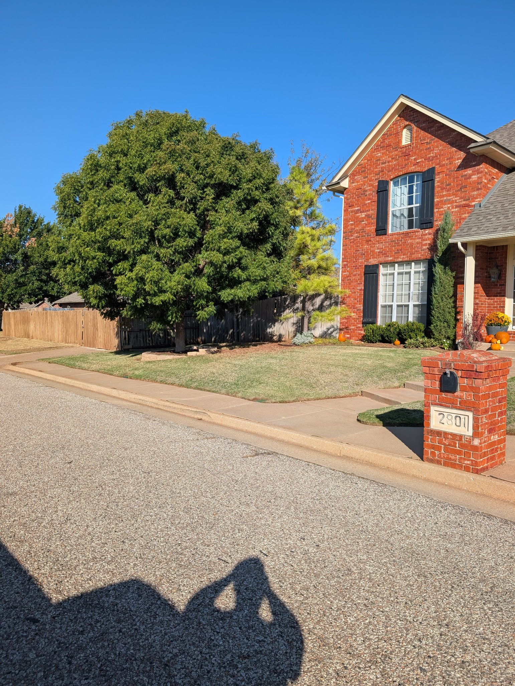
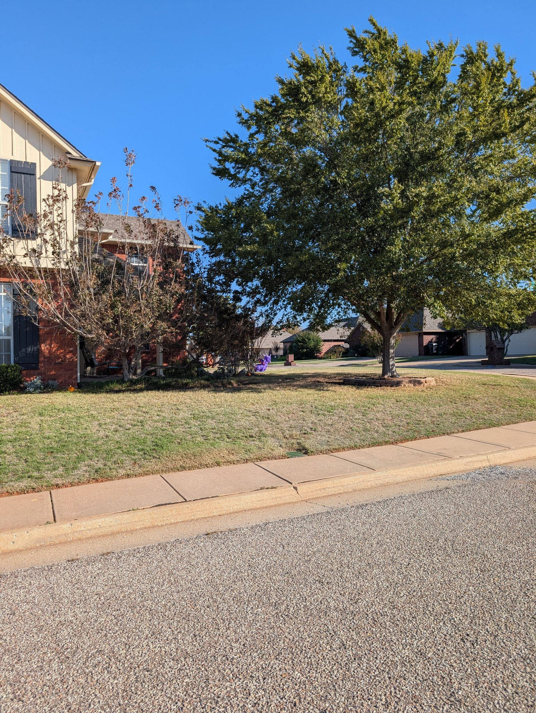
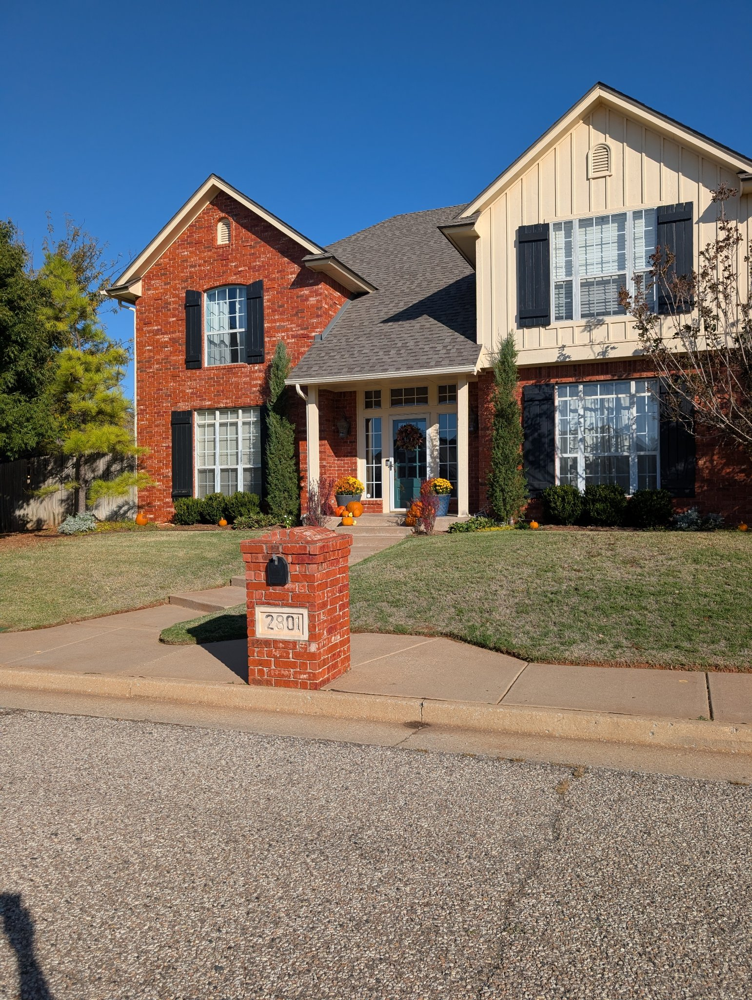
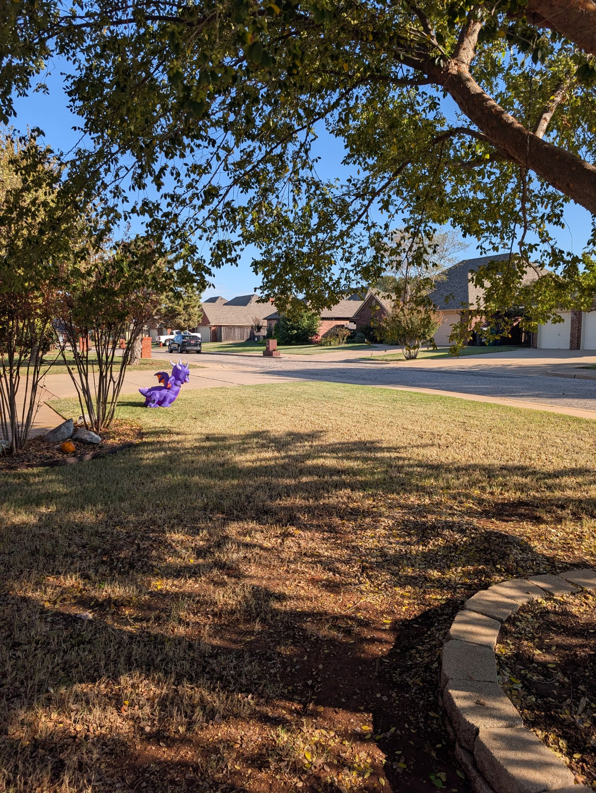
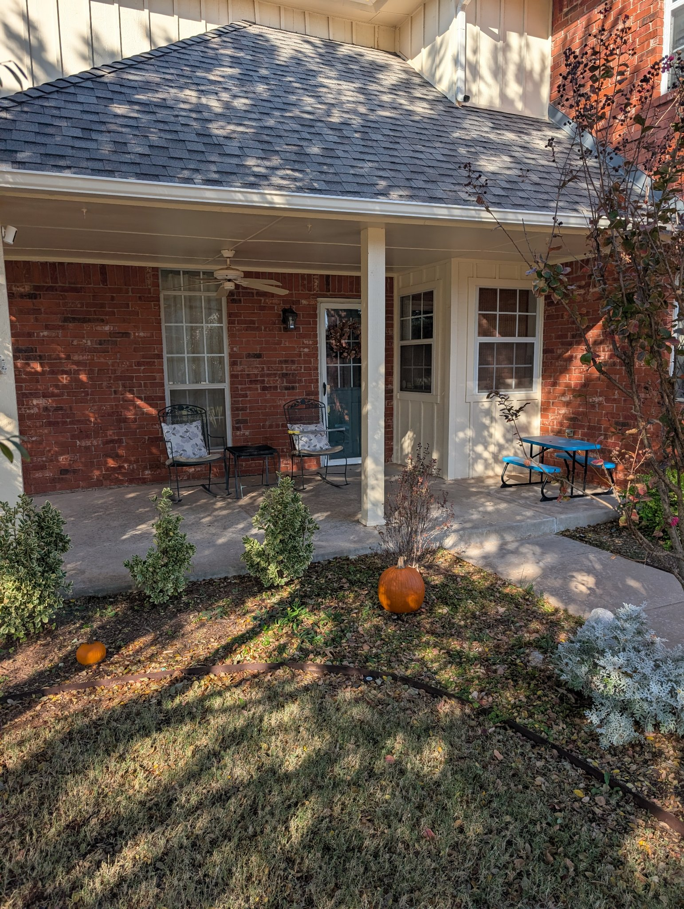
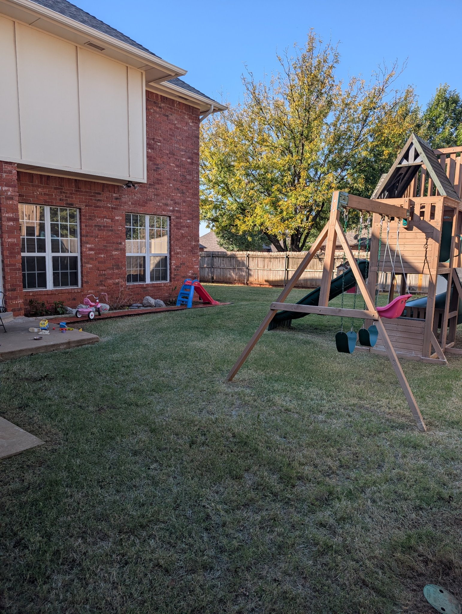
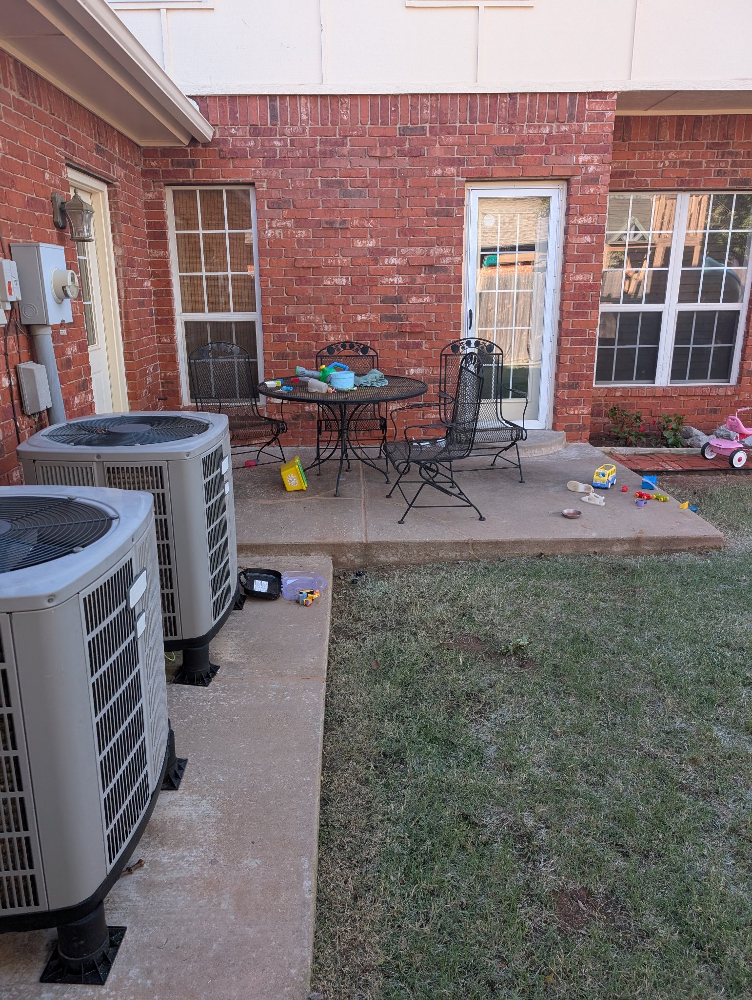
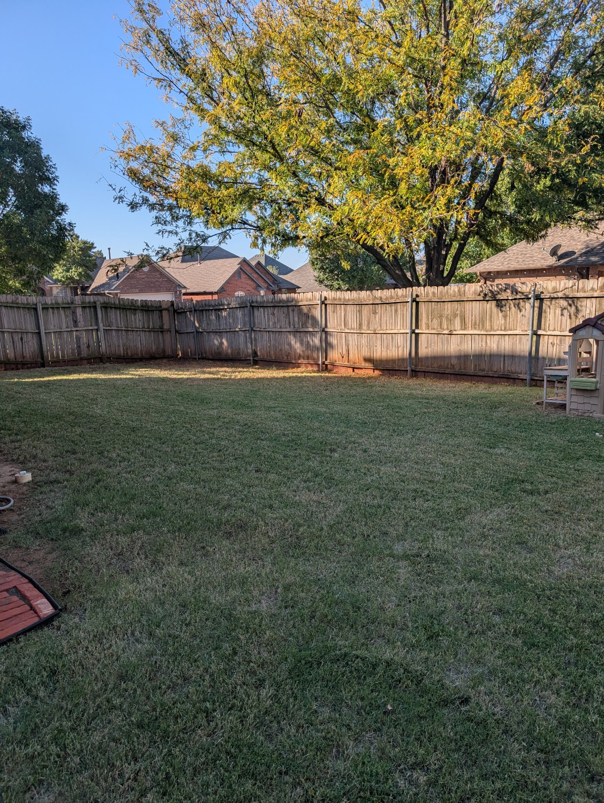

← Back to Donovan's instructions
Finished Work Photos — 2801 NW 154th St, Oklahoma City
Wednesday, Oct 28, 2026 · Crew: 2 men · Arrived 9:56 AM
Mowing service.

Backyard — mowed

Back patio and side yard

Backyard — playset side

Front porch and flower bed

Front lawn — mowed

Front of the house

Front lawn from the street

Front yard — finished
← Back to Donovan's instructions